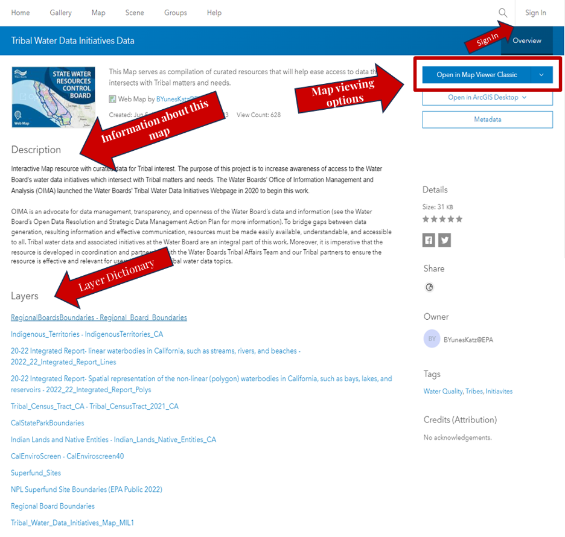
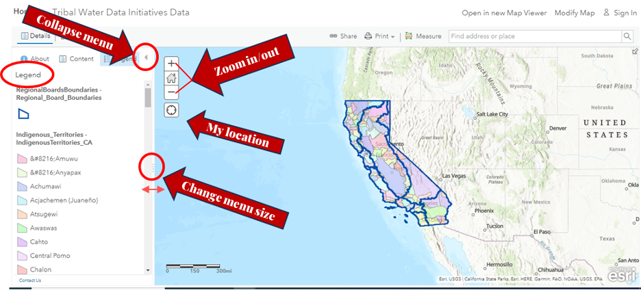
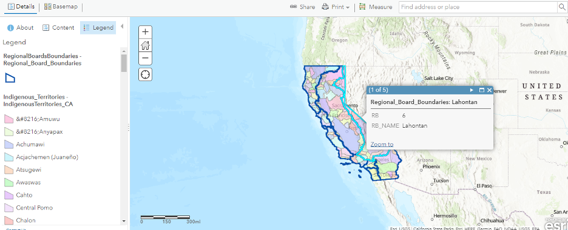
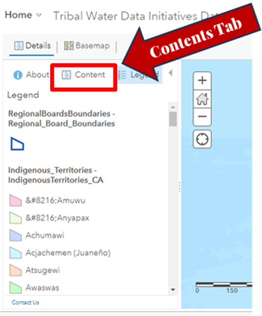
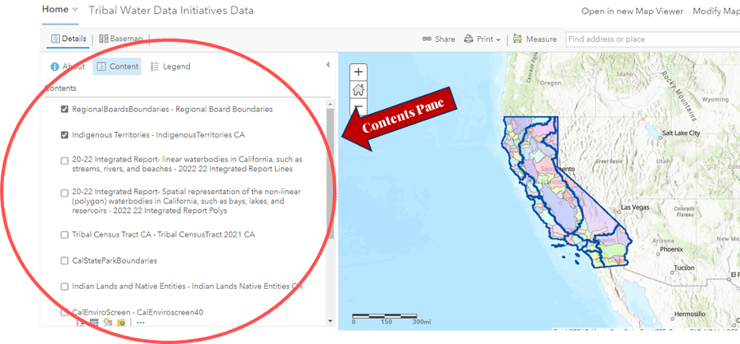
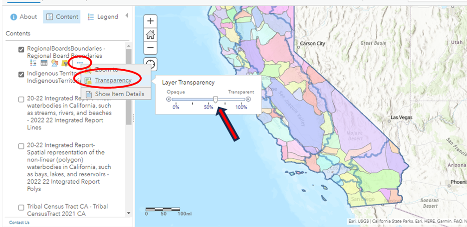

This guide serves to provide greater detail about functions within the Tribal Water Data Map.
Opening the Web Map
The link will take you to the main Portal of the map where you will find basic information like:
Map viewing options; if you have ArcGIS Desktop installed on the computer you are working on, you can opt to open the map directly on the App, otherwise just click on “Open Map Viewer Classic” to open it.
A description of the map that highlights the purpose and goals.
Layer dictionary where you can click on each of the Layers and find out more detailed information, including its source.
It isn’t necessary, but if you have an account with ESRI, you can sign in.

Navigating the Map
After you have clicked on Open Map Viewer Classic, the web map will open with two default layers being displayed: Regional Board Boundaries and Indigenous Territories.
Do the following to navigate the map:
To zoom, use Zoom in and Zoom out, the mouse and wheel button, or press Shift + Plus Sign (zoom in) and Shift + Minus Sign (zoom out) on the keyboard. To zoom in, you can also press the Shift key while dragging a box on the map.
To go back to the main view, press the house icon.
To pan, use the mouse or the arrow keys on your keyboard.
If you’re using a Mac with OS X 10.6 or later, you can use multitouch gestures by dragging two fingers to pan and zoom the map. The default behavior is to pan. To zoom in or out, press Shift while dragging two fingers toward you to zoom in or dragging two fingers away from you to zoom out.

Navigating Layers
On the left hand side you will see the legend of the layers, the blue outlines are the Regional Board Boundaries, and the different Indigenous Territories are color coded and defined on that menu.
You can click on a map area of California to find out what Regional Board, or Indigenous Territory is there. The information will be shown in a pop-up menu.
On this example, the right border of California was clicked and a pop-up showed that the area belongs to Region 6 of the Regional Boards.

*To see more information, and the rest of the layers, go to the Content Tab.

Displaying/removing View of Layers
On the Contents Pane menu, all the layers of the map will be listed (but not yet displayed)
Only Regional Boards Boundaries and Indigenous Territories are displayed, and we can tell by the checked box to the left of the layer name.

Adjusting Layer Transparency
To change the transparency of the layers:
Hover over the layer you’d like to change the transparency.
Click on the three dots on below the layer name, on the right.
Select Transparency, and slide the button to the desired transparency.
The more transparency, the less visible the layer will be.
